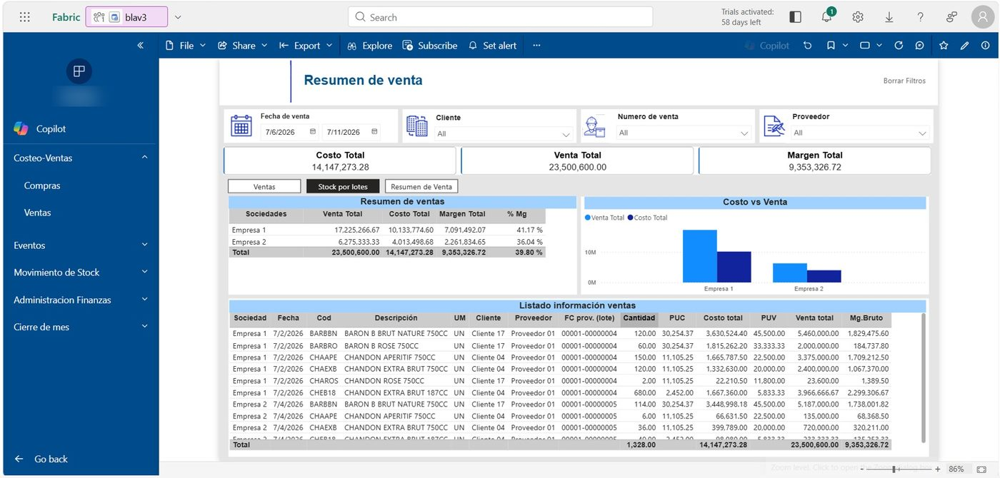

Soluciones de datos · Microsoft Fabric
Convierte los datos en
decisiones claras
Diseño y desarrollo soluciones de datos de punta a punta en Microsoft Fabric: arquitectura y bases de datos, aplicaciones de gestión, automatización y reportes de Power BI.


En producción · distribuidora de bebidas